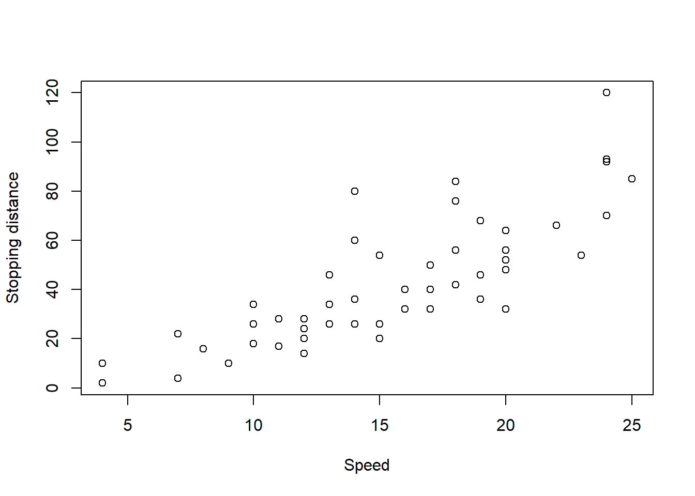
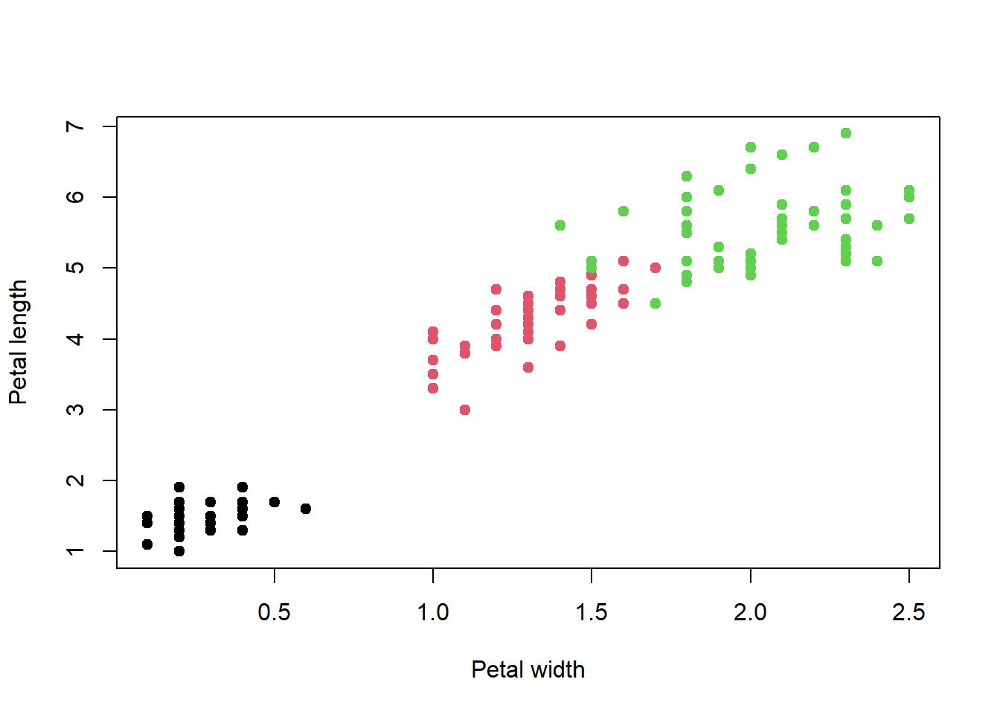
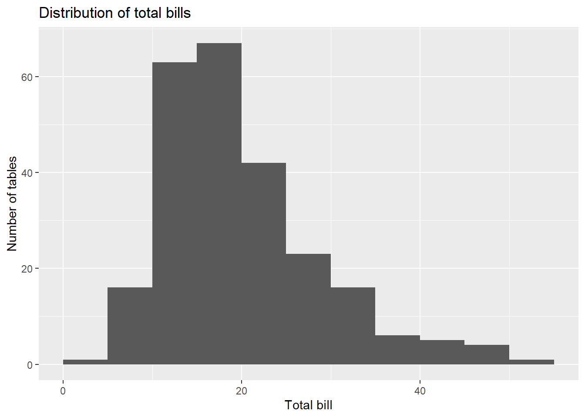
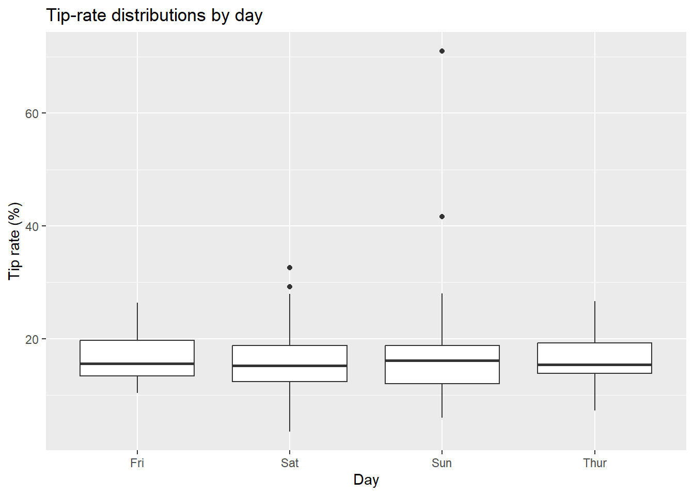

flowchart LR
A["Theoretical Construct"] --> B["Operationalization"]
B --> C["Observed Variable"]
C --> D["R Data Type"]
D --> E["Data Structure"]
E --> F["Analysis and Claim"]
데이터 유형과 구조 (1)
R로 HCI 연구 데이터를 읽고, 만들고, 질문하기
- R 기초 문법 (1)
- R 기초 문법 (2)
3주차 학습목표
Note
이번 주 학습을 마치면 다음을 할 수 있어야 합니다.
- R, RStudio, Quarto의 역할을 구분하고 프로젝트 기반으로 작업한다.
- R의 이름(name), 객체(object), 값(value), 자료형(type), 자료구조(structure)를 구분한다.
- 벡터를 만들고, 인덱싱하고, 벡터화 연산과 재활용 규칙을 설명한다.
matrix/array,data.frame,list의 차이를 이해하고 연구자료에 맞는 구조를 선택한다.- 데이터의 관측단위와 변수 유형을 확인하고, 간단한 탐색적 데이터 분석을 수행한다.
- 코드 결과를 그대로 받아들이지 않고 증거, 해석, 한계를 함께 설명한다.
오늘의 핵심 질문
지난주에 설계한 측정값은 R 안에서 어떤 형태로 존재하며, 그 형태가 분석에 어떤 영향을 줄까?
- 한 행은 한 사람인가, 한 과업인가, 한 번의 클릭인가?
- 숫자로 저장되어 있으면 모두 수치형 변수인가?
NA는 0과 같은가?- 1–7점 응답의 평균을 계산하려면 무엇을 먼저 확인해야 하는가?
- 코드가 실행되었다는 사실만으로 결과를 믿어도 되는가?
연구설계에서 데이터 구조로
지난주에는 이론적 구성개념을 측정 가능한 변수로 조작화했습니다. 이번 주에는 그 변수가 실제 데이터셋과 R 객체로 어떻게 표현되는지 살펴봅니다.
예를 들어 AI 신뢰라는 구성개념을 1–7점 다문항 척도로 측정했다면 다음과 같은 결정이 필요합니다.
| 연구 단계 | 질문 | R에서의 표현 예시 |
|---|---|---|
| 측정 | 문항 응답은 어떤 값인가? | integer, ordered factor |
| 점수화 | 다문항 점수를 어떻게 합칠 것인가? | numeric vector mean_trust |
| 관측단위 | 한 행은 사람인가, 과업인가? | participant-level 또는 trial-level data.frame |
| 반복측정 | 한 사람이 여러 조건을 경험하는가? | 동일한 participant_id가 여러 행에 반복 |
| 결측 | 응답하지 않은 값은 무엇인가? | NA |
| 분석 | 조건별 신뢰를 어떻게 비교할 것인가? | 요약, 시각화, 통계모형 |
Important
R은 데이터의 형식을 알 수 있지만, 그 값이 무엇을 의미하는지는 자동으로 알지 못합니다. 의미는 연구설계, 코드북, 변수명, 분석자의 판단에서 나옵니다.
첫 질문: CSV가 열리면 데이터 준비는 끝난 걸까?
다음은 네 명의 참여자가 인터페이스 과업을 수행한 자료라고 가정해 봅시다.
raw_hci <- data.frame(
participant_id = c("P01", "P02", "P03", "P04"),
interface = c("voice", "text", "voice", "text"),
completion_time = c("42.1", "38.4", "timeout", "35.2"),
trust = c(6, 5, NA, 4)
)
raw_hci participant_id interface completion_time trust
1 P01 voice 42.1 6
2 P02 text 38.4 5
3 P03 voice timeout NA
4 P04 text 35.2 4str(raw_hci)'data.frame': 4 obs. of 4 variables:
$ participant_id : chr "P01" "P02" "P03" "P04"
$ interface : chr "voice" "text" "voice" "text"
$ completion_time: chr "42.1" "38.4" "timeout" "35.2"
$ trust : num 6 5 NA 4completion_time에는 숫자처럼 보이는 값이 세 개 있지만, "timeout"이 하나 들어가면서 전체 열이 문자형(character)이 되었습니다.
mean(raw_hci$completion_time)Warning in mean.default(raw_hci$completion_time): argument is not numeric or
logical: returning NA[1] NA
Warning
데이터 파일이 열렸다는 것은 문자열을 읽는 데 성공했다는 뜻일 뿐입니다. 분석 가능한 데이터가 되었다는 뜻은 아닙니다.
60초 진단
- 이 데이터의 관측단위는 무엇인가요?
trust의NA는 0점과 같은 의미인가요?timeout을 결측값으로 바꾸면 충분한가요, 아니면 별도의 사건으로 보존해야 할까요?- 한 참여자가 여러 과업을 수행했다면 현재 구조는 어떻게 바뀌어야 할까요?
데이터 전처리는 단순한 청소가 아니라 연구에서 무엇이 일어났는지를 데이터 구조에 정직하게 표현하는 과정입니다.
R & RStudio
R, RStudio, Quarto는 서로 다른 도구
| 도구 | 역할 | 비유 |
|---|---|---|
| R | 코드를 계산하고 결과를 만드는 프로그래밍 언어와 실행 엔진 | 주방의 조리 장비 |
| RStudio | 코드, 파일, 그래프, 도움말을 한곳에서 다루는 IDE | 정리된 주방과 작업대 |
| Quarto | 코드, 설명, 표, 그림을 하나의 재현 가능한 문서로 묶음 | 조리법과 완성된 보고서 |
RStudio의 Console에서 실행한 코드는 빠르게 시험하기 좋지만 기록이 남기 어렵습니다. 중요한 분석은 .R 스크립트나 .qmd 문서에 남겨야 합니다.
Tip
Console은 실험장, script와 Quarto는 연구기록입니다.
Base R: 먼저 데이터와 대화하기
R에는 연습용 데이터셋이 기본으로 포함되어 있습니다.
data()cars 데이터는 자동차의 속도와 정지거리를 기록한 간단한 자료입니다.
str(cars)'data.frame': 50 obs. of 2 variables:
$ speed: num 4 4 7 7 8 9 10 10 10 11 ...
$ dist : num 2 10 4 22 16 10 18 26 34 17 ...head(cars) speed dist
1 4 2
2 4 10
3 7 4
4 7 22
5 8 16
6 9 10summary(cars) speed dist
Min. : 4.0 Min. : 2.00
1st Qu.:12.0 1st Qu.: 26.00
Median :15.0 Median : 36.00
Mean :15.4 Mean : 42.98
3rd Qu.:19.0 3rd Qu.: 56.00
Max. :25.0 Max. :120.00 dim(cars)[1] 50 2names(cars)[1] "speed" "dist" 이 함수들은 서로 다른 질문에 답합니다.
| 함수 | 묻는 질문 |
|---|---|
str() |
이 객체는 어떤 구조이며 각 변수의 자료형은 무엇인가? |
head() / tail() |
실제 행은 어떤 모습인가? |
summary() |
값의 범위와 중심, 결측, 범주 분포는 어떠한가? |
dim() |
행과 열은 몇 개인가? |
names() |
변수 이름은 무엇인가? |
새로운 데이터를 받으면 바로 모형을 적합하지 말고, 먼저 구조를 읽는 습관을 들입니다.
그래프를 한 단계씩 만들기
가장 단순한 그래프부터 시작합니다.
plot(cars)
축 이름을 명확하게 만듭니다.
plot(
cars$speed,
cars$dist,
xlab = "Speed",
ylab = "Stopping distance"
)
점의 형태와 제목을 추가합니다.
plot(
cars$speed,
cars$dist,
xlab = "Speed",
ylab = "Stopping distance",
pch = 19,
main = "Speed and stopping distance"
)
Note
한꺼번에 긴 코드를 쓰기보다 실행 → 확인 → 한 요소 추가 → 다시 확인의 순서로 작업하면 오류가 발생한 지점을 찾기 쉽습니다.
Good habits in learning data science
1. 도움말을 읽는 것도 코딩이다
?plot
help(plot)
example(plot)도움말에서 최소한 다음 항목을 확인합니다.
- Usage: 함수의 기본 형태
- Arguments: 각 입력값의 의미
- Value: 함수가 반환하는 객체
- Examples: 실행 가능한 사용 예시
2. 작업 폴더보다 프로젝트를 사용한다
getwd()[1] "C:/R/Rproj/[2]web_pages/changjunlee_com_2/teaching/grad_stat/weekly_2/posts"setwd("C:/...")를 문서마다 반복하면 다른 컴퓨터에서 코드가 작동하지 않을 가능성이 큽니다. RStudio Project를 만들고 프로젝트 폴더를 기준으로 상대경로를 사용합니다.
week03_project/
├─ week03.Rproj
├─ 03_week.qmd
├─ data_raw/
├─ data_processed/
├─ figures/
└─ R/예를 들어 원자료는 다음과 같이 읽습니다.
# 프로젝트 폴더를 기준으로 한 상대경로 예시
# logs <- read.csv("data_raw/user_logs.csv")
Warning
분석 중간에 setwd()로 위치를 계속 바꾸면 코드가 어느 폴더를 기준으로 작동하는지 추적하기 어렵습니다. 프로젝트를 열고, 상대경로를 사용하세요.
3. 패키지 설치와 불러오기를 구분한다
# 한 컴퓨터에서 보통 한 번만 설치
install.packages(c("dplyr", "ggplot2"))# R 세션을 새로 시작할 때마다 불러오기
library(dplyr)
Attaching package: 'dplyr'The following objects are masked from 'package:stats':
filter, lagThe following objects are masked from 'package:base':
intersect, setdiff, setequal, unionlibrary(ggplot2)install.packages()는 패키지를 컴퓨터에 저장합니다.library()는 설치된 패키지를 현재 R 세션에서 사용할 수 있게 합니다.- 패키지 이름과 함수 이름이 충돌할 때는
dplyr::filter()처럼 출처를 명시할 수 있습니다.
4. 오류 메시지를 마지막 줄부터 읽는다
| 오류·경고 | 먼저 확인할 것 |
|---|---|
object 'x' not found |
객체를 만들었는가? 이름 철자가 같은가? 해당 청크를 먼저 실행했는가? |
could not find function |
패키지를 설치하고 library()로 불러왔는가? |
unexpected symbol |
괄호, 쉼표, 따옴표가 빠지지 않았는가? |
non-numeric argument |
숫자여야 할 열이 문자형으로 읽히지 않았는가? |
NAs introduced by coercion |
숫자로 바꿀 수 없는 문자열이 포함되어 있지 않은가? |
5. 재현 가능한 최소 예시를 만든다
오류가 생기면 전체 연구자료를 복사하기보다 문제를 재현하는 작은 객체를 만듭니다.
bad_time <- c("42.1", "38.4", "timeout", "35.2")
as.numeric(bad_time)Warning: NAs introduced by coercion[1] 42.1 38.4 NA 35.2이제 어떤 값이 변환을 방해했는지 분명하게 보입니다.
Data for example: iris
iris는 세 종의 붓꽃에서 꽃받침과 꽃잎의 길이·너비를 측정한 고전적인 데이터셋입니다. 오늘은 분류모형보다 자료형과 구조를 읽는 연습에 사용합니다.
str(iris)'data.frame': 150 obs. of 5 variables:
$ Sepal.Length: num 5.1 4.9 4.7 4.6 5 5.4 4.6 5 4.4 4.9 ...
$ Sepal.Width : num 3.5 3 3.2 3.1 3.6 3.9 3.4 3.4 2.9 3.1 ...
$ Petal.Length: num 1.4 1.4 1.3 1.5 1.4 1.7 1.4 1.5 1.4 1.5 ...
$ Petal.Width : num 0.2 0.2 0.2 0.2 0.2 0.4 0.3 0.2 0.2 0.1 ...
$ Species : Factor w/ 3 levels "setosa","versicolor",..: 1 1 1 1 1 1 1 1 1 1 ...head(iris, 10) Sepal.Length Sepal.Width Petal.Length Petal.Width Species
1 5.1 3.5 1.4 0.2 setosa
2 4.9 3.0 1.4 0.2 setosa
3 4.7 3.2 1.3 0.2 setosa
4 4.6 3.1 1.5 0.2 setosa
5 5.0 3.6 1.4 0.2 setosa
6 5.4 3.9 1.7 0.4 setosa
7 4.6 3.4 1.4 0.3 setosa
8 5.0 3.4 1.5 0.2 setosa
9 4.4 2.9 1.4 0.2 setosa
10 4.9 3.1 1.5 0.1 setosasummary(iris) Sepal.Length Sepal.Width Petal.Length Petal.Width
Min. :4.300 Min. :2.000 Min. :1.000 Min. :0.100
1st Qu.:5.100 1st Qu.:2.800 1st Qu.:1.600 1st Qu.:0.300
Median :5.800 Median :3.000 Median :4.350 Median :1.300
Mean :5.843 Mean :3.057 Mean :3.758 Mean :1.199
3rd Qu.:6.400 3rd Qu.:3.300 3rd Qu.:5.100 3rd Qu.:1.800
Max. :7.900 Max. :4.400 Max. :6.900 Max. :2.500
Species
setosa :50
versicolor:50
virginica :50
구조를 읽어봅시다
- 한 행(row)의 관측단위는 무엇인가요?
- 수치형 변수는 몇 개인가요?
- 범주형 변수는 무엇이며 몇 개의 수준(level)을 가지나요?
- 종(species)을 숫자 1, 2, 3으로 저장하면 수치형 변수가 되는 걸까요?
levels(iris$Species)[1] "setosa" "versicolor" "virginica" table(iris$Species)
setosa versicolor virginica
50 50 50 변수 두 개의 관계를 먼저 봅니다.
plot(
iris$Petal.Width,
iris$Petal.Length,
col = iris$Species,
pch = 19,
xlab = "Petal width",
ylab = "Petal length"
)
Important
그래프에서 종별 군집이 보인다고 해서 꽃잎 너비가 종을 원인적으로 결정한다는 뜻은 아닙니다. 시각화가 보여주는 패턴과 연구설계가 허용하는 주장을 구분해야 합니다.
Data Science Process with example data
데이터 분석은 한 방향으로 끝나는 직선 과정이 아니라, 질문과 자료 사이를 반복해서 오가는 과정입니다.
flowchart LR
A["Question"] --> B["Collect or Import"]
B --> C["Inspect"]
C --> D["Clean and Transform"]
D --> E["Explore"]
E --> F["Model or Infer"]
F --> G["Communicate"]
G -. "Revise the question" .-> A
Example: restaurant tips data
이 데이터는 한 식당에서 기록된 계산서와 팁 정보를 담고 있습니다.
tips_url <- "https://raw.githubusercontent.com/mwaskom/seaborn-data/master/tips.csv"
tips <- read.csv(tips_url)
str(tips)'data.frame': 244 obs. of 7 variables:
$ total_bill: num 17 10.3 21 23.7 24.6 ...
$ tip : num 1.01 1.66 3.5 3.31 3.61 4.71 2 3.12 1.96 3.23 ...
$ sex : chr "Female" "Male" "Male" "Male" ...
$ smoker : chr "No" "No" "No" "No" ...
$ day : chr "Sun" "Sun" "Sun" "Sun" ...
$ time : chr "Dinner" "Dinner" "Dinner" "Dinner" ...
$ size : int 2 3 3 2 4 4 2 4 2 2 ...head(tips) total_bill tip sex smoker day time size
1 16.99 1.01 Female No Sun Dinner 2
2 10.34 1.66 Male No Sun Dinner 3
3 21.01 3.50 Male No Sun Dinner 3
4 23.68 3.31 Male No Sun Dinner 2
5 24.59 3.61 Female No Sun Dinner 4
6 25.29 4.71 Male No Sun Dinner 4
Note
원격 URL은 수업 예제에는 편리하지만 장기적으로 안정적이지 않을 수 있습니다. 실제 연구에서는 원자료를 data_raw/에 보존하고, 출처와 다운로드 날짜를 함께 기록하세요.
Step 1. 관측단위를 먼저 확인한다
이 데이터의 한 행은 한 사람이 아니라 한 테이블의 한 계산서입니다.
dim(tips)[1] 244 7names(tips)[1] "total_bill" "tip" "sex" "smoker" "day"
[6] "time" "size" 주요 변수는 다음과 같습니다.
| 변수 | 의미 | 예상 자료형 |
|---|---|---|
total_bill |
총 계산금액 | numeric |
tip |
팁 금액 | numeric |
sex |
데이터에 기록된 계산자의 성별 범주 | character/factor |
smoker |
흡연석 여부 | character/factor |
day |
요일 | character/factor |
time |
점심/저녁 | character/factor |
size |
테이블 인원 수 | integer/numeric |
첫 번째 행을 읽어봅시다.
tips[1, ] total_bill tip sex smoker day time size
1 16.99 1.01 Female No Sun Dinner 2첫 행은 일요일 저녁, 2인 테이블에서 총액이 16.99이고 팁이 1.01인 계산서를 나타냅니다.
Step 2. 데이터 품질을 확인한다
summary(tips) total_bill tip sex smoker
Min. : 3.07 Min. : 1.000 Length:244 Length:244
1st Qu.:13.35 1st Qu.: 2.000 Class :character Class :character
Median :17.80 Median : 2.900 Mode :character Mode :character
Mean :19.79 Mean : 2.998
3rd Qu.:24.13 3rd Qu.: 3.562
Max. :50.81 Max. :10.000
day time size
Length:244 Length:244 Min. :1.00
Class :character Class :character 1st Qu.:2.00
Mode :character Mode :character Median :2.00
Mean :2.57
3rd Qu.:3.00
Max. :6.00 colSums(is.na(tips))total_bill tip sex smoker day time size
0 0 0 0 0 0 0 질문해 봅시다.
- 총액이나 팁에 음수 또는 0이 있는가?
- 테이블 인원 수의 범위가 현실적인가?
- 범주 이름의 철자와 대소문자는 일관적인가?
- 중복된 행은 있는가?
sum(tips$total_bill <= 0)[1] 0sum(tips$tip < 0)[1] 0range(tips$size)[1] 1 6sum(duplicated(tips))[1] 1Step 3. 분석에 필요한 변수를 만든다
팁 금액만 비교하면 총 계산금액의 영향을 크게 받습니다. 따라서 팁 비율을 함께 봅니다.
tips <- tips |>
mutate(tip_rate = 100 * tip / total_bill)
head(tips) total_bill tip sex smoker day time size tip_rate
1 16.99 1.01 Female No Sun Dinner 2 5.944673
2 10.34 1.66 Male No Sun Dinner 3 16.054159
3 21.01 3.50 Male No Sun Dinner 3 16.658734
4 23.68 3.31 Male No Sun Dinner 2 13.978041
5 24.59 3.61 Female No Sun Dinner 4 14.680765
6 25.29 4.71 Male No Sun Dinner 4 18.623962
Warning
새 변수를 만들기 전에 분모가 0이거나 결측인지 확인해야 합니다. 또한 팁 비율이 높다는 사실이 반드시 서비스 만족도가 높았음을 의미하지는 않습니다.
Step 4. 수치와 그림으로 탐색한다
tips |>
summarise(
n = n(),
mean_bill = mean(total_bill),
median_bill = median(total_bill),
mean_tip_rate = mean(tip_rate),
median_tip_rate = median(tip_rate)
) n mean_bill median_bill mean_tip_rate median_tip_rate
1 244 19.78594 17.795 16.08026 15.47698tips |>
ggplot(aes(x = total_bill)) +
geom_histogram(binwidth = 5, boundary = 0) +
labs(
x = "Total bill",
y = "Number of tables",
title = "Distribution of total bills"
)
tips |>
ggplot(aes(x = total_bill, y = tip)) +
geom_point(alpha = 0.65) +
geom_smooth(method = "lm", se = FALSE) +
labs(
x = "Total bill",
y = "Tip",
title = "Larger bills tend to include larger tips"
)`geom_smooth()` using formula = 'y ~ x'
tips |>
group_by(day) |>
summarise(
n = n(),
median_tip_rate = median(tip_rate),
.groups = "drop"
)# A tibble: 4 × 3
day n median_tip_rate
<chr> <int> <dbl>
1 Fri 19 15.6
2 Sat 87 15.2
3 Sun 76 16.1
4 Thur 62 15.4tips |>
ggplot(aes(x = day, y = tip_rate)) +
geom_boxplot() +
labs(
x = "Day",
y = "Tip rate (%)",
title = "Tip-rate distributions by day"
)
Step 5. 관찰과 해석을 구분한다
| 수준 | 예시 |
|---|---|
| 관찰 | 총 계산금액이 큰 테이블에서 팁 금액도 대체로 크다. |
| 수치적 증거 | 산점도에서 양의 관계가 보이고, 두 변수의 상관계수를 계산할 수 있다. |
| 해석 | 팁이 계산금액에 비례해 결정되는 관행과 관련될 수 있다. |
| 말할 수 없는 것 | 계산금액을 인위적으로 높이면 동일한 비율로 팁이 증가한다고 단정할 수 없다. |
| 추가로 필요한 자료 | 서버, 주문 품목, 서비스 평가, 시간대, 반복 방문자, 프로모션 등 |
cor(tips$total_bill, tips$tip)[1] 0.6757341Step 6. Modeling은 무엇을 더하는가?
모형은 여러 변수를 동시에 고려해 설명하거나 예측할 수 있게 합니다. 다만 모형이 복잡해진다고 연구설계의 한계가 사라지지는 않습니다.
# 다음 주차 이후에 해석할 예고편
tip_model <- lm(tip ~ total_bill + size + day, data = tips)
summary(tip_model)모형은 데이터에 질문하는 문법이지, 인과관계를 자동으로 만들어 주는 기계가 아닙니다.
Setup your project!
권장 프로젝트 구조
hci-stat-week03/
├─ hci-stat-week03.Rproj
├─ 03_week.qmd
├─ data_raw/
│ └─ tips.csv
├─ data_processed/
├─ figures/
└─ R/- RStudio에서 File → New Project를 선택합니다.
.Rproj파일이 있는 폴더를 프로젝트 루트로 사용합니다.- 원자료는
data_raw/에 보존하고 직접 덮어쓰지 않습니다. - 처리한 데이터는
data_processed/에 별도로 저장합니다. - 코드와 설명은
.R또는.qmd파일에 남깁니다.
Tip
분석이 꼬였을 때 작업공간을 무조건 지우는 코드보다 Session → Restart R로 깨끗한 세션에서 문서를 처음부터 실행해 보는 것이 더 좋은 재현성 검사입니다.
Object, name, value: “variable”의 두 가지 의미
R 프로그래밍에서 이름은 객체를 가리킵니다.
my_vector <- c(1, 2, 3)my_vector: 객체를 가리키는 이름(name)c(1, 2, 3): 메모리에 만들어진 벡터 객체(object)1,2,3: 객체 안의 값(value)
통계에서 “변수(variable)”는 대개 데이터프레임의 열처럼 사람이나 사건마다 달라지는 속성을 뜻합니다. 따라서 다음 두 문장은 서로 다른 의미로 “변수”라는 말을 사용합니다.
- 프로그래밍: “
x라는 변수에 값을 저장한다.” - 연구방법: “신뢰 점수는 결과변수다.”
객체를 검사하는 기본 도구
x <- c(4, 7, 9)
class(x)[1] "numeric"typeof(x)[1] "double"length(x)[1] 3attributes(x)NULLstr(x) num [1:3] 4 7 9| 함수 | 확인하는 것 |
|---|---|
typeof() |
객체가 내부적으로 저장되는 기본 유형 |
class() |
객체가 어떤 방식으로 동작하도록 정의된 클래스 |
length() |
원소 수 |
dim() |
행·열·차원의 크기 |
attributes() |
이름, 차원, 수준 등 부가정보 |
str() |
위 정보를 한 번에 압축해 보여주는 구조 요약 |
Basic Syntax
주석, 할당, 함수 호출
# 이 줄은 주석입니다.
x <- 5
y <- 2
z <- x + y
z[1] 7이 수업에서는 객체 할당에 <-를 기본으로 사용합니다. =도 많은 상황에서 작동하지만, 함수의 인수 지정과 객체 할당을 시각적으로 구분하기 위해 <-를 권장합니다.
round(x = 3.14159, digits = 2)[1] 3.14round: 함수 이름x,digits: 인수(argument) 이름3.14159,2: 함수에 전달한 값- 반환값
3.14: 함수가 새로 만든 결과 객체
객체 이름 짓기
participant_id <- "P01"
completion_time <- 42.1
trust_score <- 6권장 원칙은 다음과 같습니다.
- 의미가 드러나는 이름을 사용합니다.
- 여러 단어는
snake_case로 연결합니다. - 공백, 하이픈, 한글 파일경로처럼 호환성을 해칠 수 있는 요소는 가급적 피합니다.
data,mean,filter처럼 함수 이름과 쉽게 충돌하는 지나치게 일반적인 이름을 피합니다.
Native pipe |>
파이프는 이전 단계의 결과를 다음 함수로 전달합니다.
tips |>
head(3) total_bill tip sex smoker day time size tip_rate
1 16.99 1.01 Female No Sun Dinner 2 5.944673
2 10.34 1.66 Male No Sun Dinner 3 16.054159
3 21.01 3.50 Male No Sun Dinner 3 16.658734다음 두 코드는 같은 결과를 냅니다.
head(tips, 3) total_bill tip sex smoker day time size tip_rate
1 16.99 1.01 Female No Sun Dinner 2 5.944673
2 10.34 1.66 Male No Sun Dinner 3 16.054159
3 21.01 3.50 Male No Sun Dinner 3 16.658734tips |>
head(3) total_bill tip sex smoker day time size tip_rate
1 16.99 1.01 Female No Sun Dinner 2 5.944673
2 10.34 1.66 Male No Sun Dinner 3 16.054159
3 21.01 3.50 Male No Sun Dinner 3 16.658734파이프는 분석 절차를 위에서 아래로 읽을 수 있게 해 줍니다.
tips |>
filter(total_bill >= 40) |>
select(total_bill, tip, size) total_bill tip size
1 48.27 6.73 4
2 40.17 4.73 4
3 44.30 2.50 3
4 41.19 5.00 5
5 48.17 5.00 6
6 50.81 10.00 3
7 45.35 3.50 3
8 40.55 3.00 2
9 43.11 5.00 4
10 48.33 9.00 4R의 기본 자료형
R의 원자 벡터(atomic vector)는 한 가지 기본 유형의 값만 담습니다.
| 기본 유형 | 예시 | typeof() 결과 |
|---|---|---|
| logical | TRUE, FALSE |
"logical" |
| integer | 1L, 20L |
"integer" |
| double | 1, 3.14 |
"double" |
| complex | 1 + 2i |
"complex" |
| character | "voice", "P01" |
"character" |
typeof(TRUE)[1] "logical"typeof(1L)[1] "integer"typeof(1)[1] "double"typeof(1 + 2i)[1] "complex"typeof("P01")[1] "character"
Note
R에서 1은 기본적으로 double이며, 정수형을 명시하려면 1L처럼 L을 붙입니다. 대부분의 기초 통계분석에서는 두 유형의 차이를 크게 의식하지 않아도 되지만, 자료구조를 읽을 때는 알아둘 필요가 있습니다.
factor는 무엇인가?
factor는 범주형 변수를 표현하는 클래스입니다. 내부적으로는 정수 코드와 수준(level) 정보를 함께 저장합니다.
interface <- factor(
c("voice", "text", "voice", "text"),
levels = c("text", "voice")
)
interface[1] voice text voice text
Levels: text voiceclass(interface)[1] "factor"typeof(interface)[1] "integer"levels(interface)[1] "text" "voice"순서가 있는 범주는 ordered factor로 표현할 수 있습니다.
satisfaction <- factor(
c("low", "high", "medium", "high"),
levels = c("low", "medium", "high"),
ordered = TRUE
)
satisfaction[1] low high medium high
Levels: low < medium < high
Warning
as.numeric(factor_object)는 화면에 보이는 라벨을 숫자로 바꾸는 것이 아니라 내부 정수 코드를 반환합니다. 범주 라벨이 숫자로 되어 있어도 변환 과정을 반드시 확인하세요.
rating <- factor(c("10", "20", "10"))
as.numeric(rating) # 내부 코드 1, 2, 1[1] 1 2 1as.numeric(as.character(rating)) # 라벨 10, 20, 10[1] 10 20 10자동 형변환(coercion)
한 벡터에는 한 가지 기본 유형만 들어갈 수 있으므로 서로 다른 유형을 섞으면 R이 공통 유형으로 변환합니다.
c(1, 2, 3)[1] 1 2 3c(1, TRUE, 3)[1] 1 1 3c(1, "2", TRUE)[1] "1" "2" "TRUE"실행 전에 예측해 봅시다
x <- c(1, "2", 3)
typeof(x)[1] "character"x + 1Error in x + 1: non-numeric argument to binary operator- 숫자처럼 보이는 문자
"2"는 자동으로 숫자가 아닙니다. str()와typeof()를 먼저 확인하는 습관이 필요합니다.
자료형 확인과 변환
x <- "42.1"
is.character(x)[1] TRUEas.numeric(x)[1] 42.1condition_code <- c(1, 2, 1, 2)
condition_factor <- factor(
condition_code,
levels = c(1, 2),
labels = c("control", "AI")
)
condition_factor[1] control AI control AI
Levels: control AI숫자 1과 2로 저장되어 있다는 이유만으로 실험조건이 수치형 변수인 것은 아닙니다. 저장 형식과 변수의 의미를 구분해야 합니다.
Special values: NA, NaN, Inf, NULL
| 값 | 의미 | 예시 |
|---|---|---|
NA |
값이 결측됨 | 설문 무응답, 센서 기록 누락 |
NaN |
정의되지 않은 수치 계산 결과 | 0 / 0 |
Inf, -Inf |
양·음의 무한대 | 1 / 0 |
NULL |
객체나 요소가 존재하지 않음, 길이 0 | 리스트 요소 제거, 반환할 값 없음 |
c(NA, NaN, Inf, -Inf)[1] NA NaN Inf -Inf0 / 0[1] NaN1 / 0[1] Inflength(NULL)[1] 0결측값은 == NA로 찾지 않는다
trust <- c(6, 5, NA, 4)
trust == NA[1] NA NA NA NAis.na(trust)[1] FALSE FALSE TRUE FALSEanyNA(trust)[1] TRUE결측값이 포함된 계산은 기본적으로 NA를 반환합니다.
mean(trust)[1] NAmean(trust, na.rm = TRUE)[1] 5
Warning
na.rm = TRUE는 결측을 “해결”한 것이 아니라 계산에서 제외한 것입니다. 왜 결측되었는지, 어떤 참여자가 제외되는지, 결과가 달라지는지를 별도로 검토해야 합니다.
연산자
산술 연산자
| 연산자 | 의미 | 예시 |
|---|---|---|
+, - |
더하기, 빼기 | 5 + 2 |
*, / |
곱하기, 나누기 | 5 / 2 |
^ |
거듭제곱 | 2^3 |
%% |
나머지 | 5 %% 2 |
%/% |
정수 나눗셈 | 5 %/% 2 |
5 + 2[1] 75 / 2[1] 2.52^3[1] 85 %% 2[1] 15 %/% 2[1] 2비교·논리 연산자
| 연산자 | 의미 |
|---|---|
<, <=, >, >= |
크기 비교 |
==, != |
같음, 다름 |
! |
NOT |
& |
원소별 AND |
| |
원소별 OR |
%in% |
집합에 포함되는지 확인 |
completion_time <- c(42.1, 38.4, 55.0, 35.2)
errors <- c(0, 1, 3, 0)
completion_time < 45[1] TRUE TRUE FALSE TRUEerrors == 0[1] TRUE FALSE FALSE TRUE(completion_time < 45) & (errors == 0)[1] TRUE FALSE FALSE TRUEday <- c("Thur", "Fri", "Sat", "Sun")
day %in% c("Sat", "Sun")[1] FALSE FALSE TRUE TRUE
Tip
=는 할당에도 사용할 수 있지만, 비교는 반드시 ==를 사용합니다.
Vector
벡터는 R의 가장 기본적인 자료구조입니다. 숫자 하나도 길이가 1인 벡터이며, 데이터프레임의 각 열도 기본적으로 벡터입니다.
Creating a vector
completion_time <- c(42.1, 38.4, 55.0, 35.2)
participant_id <- c("P01", "P02", "P03", "P04")
success <- c(TRUE, TRUE, FALSE, TRUE)length(completion_time)[1] 4typeof(completion_time)[1] "double"연속된 값이나 반복값은 다음과 같이 만들 수 있습니다.
1:7[1] 1 2 3 4 5 6 77:1[1] 7 6 5 4 3 2 1seq(from = 0, to = 1, by = 0.2)[1] 0.0 0.2 0.4 0.6 0.8 1.0seq(from = 0, to = 1, length.out = 6)[1] 0.0 0.2 0.4 0.6 0.8 1.0rep(c("control", "AI"), times = 3)[1] "control" "AI" "control" "AI" "control" "AI" rep(c("control", "AI"), each = 3)[1] "control" "control" "control" "AI" "AI" "AI" Accessing elements
R의 인덱스는 1부터 시작합니다.
completion_time[1][1] 42.1completion_time[c(1, 3)][1] 42.1 55.0completion_time[2:4][1] 38.4 55.0 35.2음수 인덱스는 해당 위치를 제외합니다.
completion_time[-1][1] 38.4 55.0 35.2completion_time[-c(1, 3)][1] 38.4 35.2논리 벡터로 조건에 맞는 값만 추출할 수 있습니다.
completion_time[completion_time < 45][1] 42.1 38.4 35.2participant_id[success][1] "P01" "P02" "P04"잘못된 인덱싱을 찾아봅시다
# 벡터는 1차원이므로 다음 코드는 오류입니다.
completion_time[1, 2]여러 위치를 선택하려면 위치를 하나의 벡터로 묶습니다.
completion_time[c(1, 2)][1] 42.1 38.4Named vector
값에 이름을 붙이면 코드의 의미가 더 분명해집니다.
mean_time_by_condition <- c(
text = 36.8,
voice = 48.6
)
mean_time_by_condition text voice
36.8 48.6 mean_time_by_condition["voice"]voice
48.6 Vectorized operations
R은 벡터 전체에 연산을 적용합니다.
completion_time + 1[1] 43.1 39.4 56.0 36.2completion_time / 60[1] 0.7016667 0.6400000 0.9166667 0.5866667두 벡터의 길이가 같으면 같은 위치의 원소끼리 계산합니다.
baseline_time <- c(40, 40, 50, 36)
completion_time - baseline_time[1] 2.1 -1.6 5.0 -0.8반복문 없이 조건을 만들기
fast_and_successful <- (completion_time < 45) & success
fast_and_successful[1] TRUE TRUE FALSE TRUEparticipant_id[fast_and_successful][1] "P01" "P02" "P04"Recycling rule
짧은 벡터는 긴 벡터의 길이에 맞춰 반복될 수 있습니다.
1:4 + c(10, 20)[1] 11 22 13 24c(10, 20)이 10, 20, 10, 20처럼 재활용된 결과입니다. 그러나 길이가 정확히 나누어지지 않으면 경고가 발생합니다.
# 의도적으로 경고가 발생하는 예시
1:4 + 1:3Warning in 1:4 + 1:3: longer object length is not a multiple of shorter object
length[1] 2 4 6 5
Warning
재활용 규칙은 편리하지만 조용한 오류를 만들 수 있습니다. 길이가 다른 벡터를 계산할 때는 length()를 확인하고, 의도한 반복은 rep()으로 명시하세요.
Common functions with vectors
length(completion_time)[1] 4sum(success)[1] 3mean(completion_time)[1] 42.675median(completion_time)[1] 40.25min(completion_time)[1] 35.2max(completion_time)[1] 55range(completion_time)[1] 35.2 55.0sd(completion_time)[1] 8.686915head(completion_time, 2)[1] 42.1 38.4tail(completion_time, 2)[1] 55.0 35.2sort(completion_time)[1] 35.2 38.4 42.1 55.0all() and any()
all(completion_time > 0)[1] TRUEany(completion_time > 50)[1] TRUEall(): 모든 조건이 참인가?any(): 하나라도 참인가?
Sets: 서로 다른 데이터 소스의 ID 비교
설문 응답자와 로그 기록 참여자가 완전히 일치하는지 확인한다고 가정해 봅시다.
survey_ids <- c("P01", "P02", "P03", "P04")
log_ids <- c("P02", "P03", "P04", "P05")union(survey_ids, log_ids)[1] "P01" "P02" "P03" "P04" "P05"intersect(survey_ids, log_ids)[1] "P02" "P03" "P04"setdiff(survey_ids, log_ids)[1] "P01"setdiff(log_ids, survey_ids)[1] "P05"setequal(survey_ids, log_ids)[1] FALSE| 함수 | 연구 데이터에서의 질문 |
|---|---|
intersect() |
두 데이터에 모두 있는 참여자는 누구인가? |
setdiff(A, B) |
A에는 있지만 B에는 없는 ID는 무엇인가? |
union() |
두 자료에 등장한 전체 ID는 무엇인가? |
setequal() |
순서와 무관하게 두 ID 집합이 같은가? |
Array와 Matrix
벡터에서 다차원 구조로
- vector: 한 차원의 동일 유형 값
- matrix: 행과 열을 가진 2차원 동일 유형 값
- array: 2개 이상의 차원을 가질 수 있는 동일 유형 값
HCI 연구에서는 다음과 같은 자료에 활용될 수 있습니다.
- 참여자 × 문항 응답 행렬
- 실제값 × 예측값의 혼동행렬(confusion matrix)
- 채널 × 시간 × 시행 형태의 생리·센서 신호
- 높이 × 너비 × 색상 채널 형태의 이미지
Creating a matrix
response_matrix <- matrix(
1:12,
nrow = 3,
ncol = 4,
byrow = TRUE
)
response_matrix [,1] [,2] [,3] [,4]
[1,] 1 2 3 4
[2,] 5 6 7 8
[3,] 9 10 11 12R은 기본적으로 열 방향으로 값을 채우므로, 행 방향으로 채우려면 byrow = TRUE를 명시합니다.
matrix(1:12, nrow = 3) [,1] [,2] [,3] [,4]
[1,] 1 4 7 10
[2,] 2 5 8 11
[3,] 3 6 9 12matrix(1:12, nrow = 3, byrow = TRUE) [,1] [,2] [,3] [,4]
[1,] 1 2 3 4
[2,] 5 6 7 8
[3,] 9 10 11 12행과 열 이름을 붙일 수 있습니다.
rownames(response_matrix) <- c("P01", "P02", "P03")
colnames(response_matrix) <- c("trust_1", "trust_2", "trust_3", "trust_4")
response_matrix trust_1 trust_2 trust_3 trust_4
P01 1 2 3 4
P02 5 6 7 8
P03 9 10 11 12Accessing matrix elements
response_matrix[1, 2][1] 2response_matrix[1, ]trust_1 trust_2 trust_3 trust_4
1 2 3 4 response_matrix[, 2]P01 P02 P03
2 6 10 response_matrix[c("P01", "P03"), c("trust_1", "trust_4")] trust_1 trust_4
P01 1 4
P03 9 12행 또는 열 하나를 추출하면 기본적으로 벡터가 반환됩니다. 행렬 형태를 유지하려면 drop = FALSE를 사용할 수 있습니다.
response_matrix[1, , drop = FALSE] trust_1 trust_2 trust_3 trust_4
P01 1 2 3 4Matrix operations
x <- matrix(1:4, nrow = 2)
y <- matrix(5:8, nrow = 2)
x + y # 원소별 덧셈 [,1] [,2]
[1,] 6 10
[2,] 8 12x * y # 원소별 곱셈 [,1] [,2]
[1,] 5 21
[2,] 12 32x %*% y # 행렬 곱셈 [,1] [,2]
[1,] 23 31
[2,] 34 46t(x) # 전치 [,1] [,2]
[1,] 1 2
[2,] 3 4행별·열별 함수를 적용할 수 있습니다.
apply(response_matrix, 1, mean) # 참여자별 평균 P01 P02 P03
2.5 6.5 10.5 apply(response_matrix, 2, mean) # 문항별 평균trust_1 trust_2 trust_3 trust_4
5 6 7 8 Creating an array
다음은 participant × time × condition 형태의 가상 센서 자료입니다.
sensor_array <- array(
data = 1:24,
dim = c(3, 4, 2),
dimnames = list(
participant = c("P01", "P02", "P03"),
time = paste0("T", 1:4),
condition = c("control", "AI")
)
)
sensor_array, , condition = control
time
participant T1 T2 T3 T4
P01 1 4 7 10
P02 2 5 8 11
P03 3 6 9 12
, , condition = AI
time
participant T1 T2 T3 T4
P01 13 16 19 22
P02 14 17 20 23
P03 15 18 21 24sensor_array["P02", "T3", "AI"][1] 20sensor_array[, , "AI"] time
participant T1 T2 T3 T4
P01 13 16 19 22
P02 14 17 20 23
P03 15 18 21 24
Note
일반적인 설문·실험 자료는 data.frame의 long format이 분석과 시각화에 더 편리합니다. 배열은 차원이 명확한 신호·이미지·행렬 계산에 특히 적합합니다.
Data.frame
data.frame은 서로 다른 자료형의 열을 같은 행 구조 안에 묶는 2차원 자료구조입니다. HCI의 설문, 실험, 로그 자료에서 가장 자주 만나게 됩니다.
핵심 원칙
- 한 열은 하나의 변수(variable)
- 한 행은 하나의 관측(observation)
- 한 셀은 하나의 값(value)
하지만 “한 관측”의 의미는 연구마다 다릅니다.
- 참여자 수준 자료: 한 행 = 한 참여자
- 시행 수준 자료: 한 행 = 한 참여자의 한 trial
- 로그 자료: 한 행 = 한 클릭 또는 사건
- 게시물 자료: 한 행 = 한 게시물
Creating an HCI data frame
hci_trials <- data.frame(
participant_id = rep(c("P01", "P02", "P03", "P04"), each = 2),
interface = rep(c("text", "voice"), times = 4),
task = c("search", "booking", "booking", "search",
"search", "booking", "booking", "search"),
completion_time = c(35.2, 43.8, 31.7, 39.5, 44.0, 52.1, 33.6, 41.4),
errors = c(0, 1, 0, 0, 2, 1, 0, 1),
trust = c(5, 6, 6, 5, 4, NA, 5, 6)
)
hci_trials participant_id interface task completion_time errors trust
1 P01 text search 35.2 0 5
2 P01 voice booking 43.8 1 6
3 P02 text booking 31.7 0 6
4 P02 voice search 39.5 0 5
5 P03 text search 44.0 2 4
6 P03 voice booking 52.1 1 NA
7 P04 text booking 33.6 0 5
8 P04 voice search 41.4 1 6str(hci_trials)'data.frame': 8 obs. of 6 variables:
$ participant_id : chr "P01" "P01" "P02" "P02" ...
$ interface : chr "text" "voice" "text" "voice" ...
$ task : chr "search" "booking" "booking" "search" ...
$ completion_time: num 35.2 43.8 31.7 39.5 44 52.1 33.6 41.4
$ errors : num 0 1 0 0 2 1 0 1
$ trust : num 5 6 6 5 4 NA 5 6dim(hci_trials)[1] 8 6names(hci_trials)[1] "participant_id" "interface" "task" "completion_time"
[5] "errors" "trust" head(hci_trials) participant_id interface task completion_time errors trust
1 P01 text search 35.2 0 5
2 P01 voice booking 43.8 1 6
3 P02 text booking 31.7 0 6
4 P02 voice search 39.5 0 5
5 P03 text search 44.0 2 4
6 P03 voice booking 52.1 1 NAsummary(hci_trials) participant_id interface task completion_time
Length:8 Length:8 Length:8 Min. :31.70
Class :character Class :character Class :character 1st Qu.:34.80
Mode :character Mode :character Mode :character Median :40.45
Mean :40.16
3rd Qu.:43.85
Max. :52.10
errors trust
Min. :0.000 Min. :4.000
1st Qu.:0.000 1st Qu.:5.000
Median :0.500 Median :5.000
Mean :0.625 Mean :5.286
3rd Qu.:1.000 3rd Qu.:6.000
Max. :2.000 Max. :6.000
NA's :1 행 수와 참여자 수는 다르다
nrow(hci_trials)[1] 8length(unique(hci_trials$participant_id))[1] 4이 데이터는 8행이지만 참여자는 4명입니다. 같은 참여자의 두 행은 서로 완전히 독립적인 관측이 아닐 수 있습니다.
Important
행의 수를 표본크기로 착각하지 마세요. 반복측정 데이터에서는 독립 참여자 수, 시행 수, 세션 수를 구분해야 합니다.
Accessing rows and columns
hci_trials$completion_time[1] 35.2 43.8 31.7 39.5 44.0 52.1 33.6 41.4hci_trials[, "completion_time"][1] 35.2 43.8 31.7 39.5 44.0 52.1 33.6 41.4hci_trials[1, ] participant_id interface task completion_time errors trust
1 P01 text search 35.2 0 5hci_trials[2, 4][1] 43.8hci_trials[1:3, c("participant_id", "interface", "completion_time")] participant_id interface completion_time
1 P01 text 35.2
2 P01 voice 43.8
3 P02 text 31.7$는 한 열을 빠르게 추출할 때 편리하고, [rows, columns]는 행과 열을 동시에 선택할 때 유용합니다.
조건에 맞는 행 선택
Base R:
hci_trials[hci_trials$interface == "voice", ] participant_id interface task completion_time errors trust
2 P01 voice booking 43.8 1 6
4 P02 voice search 39.5 0 5
6 P03 voice booking 52.1 1 NA
8 P04 voice search 41.4 1 6dplyr:
hci_trials |>
filter(interface == "voice") participant_id interface task completion_time errors trust
1 P01 voice booking 43.8 1 6
2 P02 voice search 39.5 0 5
3 P03 voice booking 52.1 1 NA
4 P04 voice search 41.4 1 6여러 조건을 결합할 수 있습니다.
hci_trials |>
filter(interface == "voice", errors <= 1) participant_id interface task completion_time errors trust
1 P01 voice booking 43.8 1 6
2 P02 voice search 39.5 0 5
3 P03 voice booking 52.1 1 NA
4 P04 voice search 41.4 1 6열 선택과 새 변수 만들기
hci_trials |>
select(participant_id, interface, completion_time, errors) participant_id interface completion_time errors
1 P01 text 35.2 0
2 P01 voice 43.8 1
3 P02 text 31.7 0
4 P02 voice 39.5 0
5 P03 text 44.0 2
6 P03 voice 52.1 1
7 P04 text 33.6 0
8 P04 voice 41.4 1hci_trials <- hci_trials |>
mutate(
success = errors == 0,
time_per_error = completion_time / (errors + 1)
)
head(hci_trials) participant_id interface task completion_time errors trust success
1 P01 text search 35.2 0 5 TRUE
2 P01 voice booking 43.8 1 6 FALSE
3 P02 text booking 31.7 0 6 TRUE
4 P02 voice search 39.5 0 5 TRUE
5 P03 text search 44.0 2 4 FALSE
6 P03 voice booking 52.1 1 NA FALSE
time_per_error
1 35.20000
2 21.90000
3 31.70000
4 39.50000
5 14.66667
6 26.05000errors + 1을 사용한 이유를 생각해 봅시다. 오류가 0일 때 0으로 나누는 문제를 피하지만, 이 새 지표가 이론적으로 의미 있는지는 별개의 질문입니다.
계산할 수 있는 변수라고 해서 모두 좋은 측정값은 아닙니다.
Grouped summaries
hci_trials |>
group_by(interface) |>
summarise(
n_rows = n(),
n_participants = n_distinct(participant_id),
mean_time = mean(completion_time),
median_errors = median(errors),
mean_trust = mean(trust, na.rm = TRUE),
.groups = "drop"
)# A tibble: 2 × 6
interface n_rows n_participants mean_time median_errors mean_trust
<chr> <int> <int> <dbl> <dbl> <dbl>
1 text 4 4 36.1 0 5
2 voice 4 4 44.2 1 5.67해석 전에 확인할 점:
- 각 조건에 같은 참여자들이 포함되는가?
- 결측 신뢰 점수는 어느 조건에 있는가?
- 평균 차이는 특정 참여자 한 명의 영향인가?
- 참여자 내 설계라면 짝을 이룬 비교가 필요한가?
Missingness and duplicates
colSums(is.na(hci_trials)) participant_id interface task completion_time errors
0 0 0 0 0
trust success time_per_error
1 0 0 anyNA(hci_trials)[1] TRUEsum(duplicated(hci_trials))[1] 0결측이 있는 행을 바로 삭제하기 전에 어떤 값이 빠졌는지 확인합니다.
hci_trials |>
filter(is.na(trust)) participant_id interface task completion_time errors trust success
1 P03 voice booking 52.1 1 NA FALSE
time_per_error
1 26.05데이터프레임 결합: key가 먼저다
참여자 수준의 배경정보가 별도 표에 있다고 가정합니다.
participants <- data.frame(
participant_id = c("P01", "P02", "P03", "P04"),
age = c(24, 29, 27, 31),
ai_experience = c("low", "high", "medium", "high")
)
participants participant_id age ai_experience
1 P01 24 low
2 P02 29 high
3 P03 27 medium
4 P04 31 highparticipant_id를 key로 시행 자료에 참여자 정보를 붙입니다.
hci_joined <- hci_trials |>
left_join(participants, by = "participant_id")
head(hci_joined) participant_id interface task completion_time errors trust success
1 P01 text search 35.2 0 5 TRUE
2 P01 voice booking 43.8 1 6 FALSE
3 P02 text booking 31.7 0 6 TRUE
4 P02 voice search 39.5 0 5 TRUE
5 P03 text search 44.0 2 4 FALSE
6 P03 voice booking 52.1 1 NA FALSE
time_per_error age ai_experience
1 35.20000 24 low
2 21.90000 24 low
3 31.70000 29 high
4 39.50000 29 high
5 14.66667 27 medium
6 26.05000 27 mediumBase R의 merge()로도 같은 목적을 수행할 수 있습니다.
hci_merged <- merge(
hci_trials,
participants,
by = "participant_id",
all.x = TRUE
)
head(hci_merged) participant_id interface task completion_time errors trust success
1 P01 text search 35.2 0 5 TRUE
2 P01 voice booking 43.8 1 6 FALSE
3 P02 text booking 31.7 0 6 TRUE
4 P02 voice search 39.5 0 5 TRUE
5 P03 text search 44.0 2 4 FALSE
6 P03 voice booking 52.1 1 NA FALSE
time_per_error age ai_experience
1 35.20000 24 low
2 21.90000 24 low
3 31.70000 29 high
4 39.50000 29 high
5 14.66667 27 medium
6 26.05000 27 medium
Warning
조인 전에 key가 각 표에서 고유한지 확인하세요. 양쪽 표에 같은 ID가 여러 번 존재하면 예상보다 행이 크게 늘어나는 many-to-many join이 발생할 수 있습니다.
anyDuplicated(participants$participant_id)[1] 0Long format과 wide format
반복측정 자료는 대개 long format이 분석에 유리합니다.
Long format
| participant_id | interface | completion_time |
|---|---|---|
| P01 | text | 35.2 |
| P01 | voice | 43.8 |
| P02 | text | 31.7 |
| P02 | voice | 39.5 |
Wide format
| participant_id | time_text | time_voice |
|---|---|---|
| P01 | 35.2 | 43.8 |
| P02 | 31.7 | 39.5 |
- long format: 조건·시점이 별도 변수로 존재하며
ggplot2, 혼합모형, 반복측정 분석에 편리 - wide format: 사람별 요약표, 일부 설문 점수 정리, 특정 분석에서 편리
Tip
데이터 모양은 보기 좋은 표를 만드는 문제가 아니라 관측단위와 분석구조를 표현하는 문제입니다.
피해야 할 습관: attach()
# 권장하지 않는 방식
attach(cars)
mean(speed)
detach(cars)attach()는 어떤 객체의 변수를 사용하고 있는지 모호하게 만들 수 있습니다. 다음처럼 출처를 명시합니다.
mean(cars$speed)[1] 15.4with(cars, mean(speed))[1] 15.4List
리스트는 서로 다른 유형과 길이의 객체를 하나의 구조 안에 담을 수 있습니다. 데이터프레임도 내부적으로는 같은 길이의 벡터들을 모은 특별한 리스트입니다.
Creating a list
연구 프로젝트의 여러 구성요소를 하나로 묶어 봅시다.
research_bundle <- list(
study_title = "AI Interface Study",
data = hci_trials,
participant_ids = unique(hci_trials$participant_id),
settings = list(
design = "within-subject",
conditions = c("text", "voice"),
outcome = "completion_time"
)
)
str(research_bundle, max.level = 2)List of 4
$ study_title : chr "AI Interface Study"
$ data :'data.frame': 8 obs. of 8 variables:
..$ participant_id : chr [1:8] "P01" "P01" "P02" "P02" ...
..$ interface : chr [1:8] "text" "voice" "text" "voice" ...
..$ task : chr [1:8] "search" "booking" "booking" "search" ...
..$ completion_time: num [1:8] 35.2 43.8 31.7 39.5 44 52.1 33.6 41.4
..$ errors : num [1:8] 0 1 0 0 2 1 0 1
..$ trust : num [1:8] 5 6 6 5 4 NA 5 6
..$ success : logi [1:8] TRUE FALSE TRUE TRUE FALSE FALSE ...
..$ time_per_error : num [1:8] 35.2 21.9 31.7 39.5 14.7 ...
$ participant_ids: chr [1:4] "P01" "P02" "P03" "P04"
$ settings :List of 3
..$ design : chr "within-subject"
..$ conditions: chr [1:2] "text" "voice"
..$ outcome : chr "completion_time"Accessing list elements
research_bundle$study_title[1] "AI Interface Study"research_bundle[["participant_ids"]][1] "P01" "P02" "P03" "P04"research_bundle[[2]] participant_id interface task completion_time errors trust success
1 P01 text search 35.2 0 5 TRUE
2 P01 voice booking 43.8 1 6 FALSE
3 P02 text booking 31.7 0 6 TRUE
4 P02 voice search 39.5 0 5 TRUE
5 P03 text search 44.0 2 4 FALSE
6 P03 voice booking 52.1 1 NA FALSE
7 P04 text booking 33.6 0 5 TRUE
8 P04 voice search 41.4 1 6 FALSE
time_per_error
1 35.20000
2 21.90000
3 31.70000
4 39.50000
5 14.66667
6 26.05000
7 33.60000
8 20.70000research_bundle["study_title"]$study_title
[1] "AI Interface Study"[[ ]]와$: 리스트 안의 원소 자체를 꺼냄[ ]: 원소를 포함한 하위 리스트를 반환
class(research_bundle[["data"]])[1] "data.frame"class(research_bundle["data"])[1] "list"Modifying a list
research_bundle$created_by <- "Student A"
research_bundle$created_by[1] "Student A"research_bundle$created_by <- NULL
names(research_bundle)[1] "study_title" "data" "participant_ids" "settings" 리스트 요소에 NULL을 할당하면 해당 요소가 제거됩니다.
Nested lists
API나 JSON에서 가져온 데이터는 중첩 리스트 형태인 경우가 많습니다.
participant_record <- list(
participant_id = "P01",
profile = list(
age = 24,
ai_experience = "low"
),
trials = hci_trials[hci_trials$participant_id == "P01", ]
)
participant_record$profile$age[1] 24participant_record[["profile"]][["ai_experience"]][1] "low"Model objects are often lists
preview_model <- lm(completion_time ~ interface, data = hci_trials)
class(preview_model)[1] "lm"str(preview_model, max.level = 1)List of 13
$ coefficients : Named num [1:2] 36.12 8.07
..- attr(*, "names")= chr [1:2] "(Intercept)" "interfacevoice"
$ residuals : Named num [1:8] -0.925 -0.4 -4.425 -4.7 7.875 ...
..- attr(*, "names")= chr [1:8] "1" "2" "3" "4" ...
$ effects : Named num [1:8] -113.6 -11.42 -4.21 -4.41 8.09 ...
..- attr(*, "names")= chr [1:8] "(Intercept)" "interfacevoice" "" "" ...
$ rank : int 2
$ fitted.values: Named num [1:8] 36.1 44.2 36.1 44.2 36.1 ...
..- attr(*, "names")= chr [1:8] "1" "2" "3" "4" ...
$ assign : int [1:2] 0 1
$ qr :List of 5
..- attr(*, "class")= chr "qr"
$ df.residual : int 6
$ contrasts :List of 1
$ xlevels :List of 1
$ call : language lm(formula = completion_time ~ interface, data = hci_trials)
$ terms :Classes 'terms', 'formula' language completion_time ~ interface
.. ..- attr(*, "variables")= language list(completion_time, interface)
.. ..- attr(*, "factors")= int [1:2, 1] 0 1
.. .. ..- attr(*, "dimnames")=List of 2
.. ..- attr(*, "term.labels")= chr "interface"
.. ..- attr(*, "order")= int 1
.. ..- attr(*, "intercept")= int 1
.. ..- attr(*, "response")= int 1
.. ..- attr(*, ".Environment")=<environment: R_GlobalEnv>
.. ..- attr(*, "predvars")= language list(completion_time, interface)
.. ..- attr(*, "dataClasses")= Named chr [1:2] "numeric" "character"
.. .. ..- attr(*, "names")= chr [1:2] "completion_time" "interface"
$ model :'data.frame': 8 obs. of 2 variables:
..- attr(*, "terms")=Classes 'terms', 'formula' language completion_time ~ interface
.. .. ..- attr(*, "variables")= language list(completion_time, interface)
.. .. ..- attr(*, "factors")= int [1:2, 1] 0 1
.. .. .. ..- attr(*, "dimnames")=List of 2
.. .. ..- attr(*, "term.labels")= chr "interface"
.. .. ..- attr(*, "order")= int 1
.. .. ..- attr(*, "intercept")= int 1
.. .. ..- attr(*, "response")= int 1
.. .. ..- attr(*, ".Environment")=<environment: R_GlobalEnv>
.. .. ..- attr(*, "predvars")= language list(completion_time, interface)
.. .. ..- attr(*, "dataClasses")= Named chr [1:2] "numeric" "character"
.. .. .. ..- attr(*, "names")= chr [1:2] "completion_time" "interface"
- attr(*, "class")= chr "lm"preview_model$coefficients (Intercept) interfacevoice
36.125 8.075 지금은 모형의 통계적 의미를 해석하지 않습니다. 핵심은 lm()이 숫자 하나가 아니라 계수, 잔차, 적합값, 식, 데이터 정보 등을 포함한 복합 객체를 반환한다는 점입니다.
Applying a function to list elements
numeric_list <- list(
text = c(35.2, 31.7, 44.0, 33.6),
voice = c(43.8, 39.5, 52.1, 41.4)
)
lapply(numeric_list, mean)$text
[1] 36.125
$voice
[1] 44.2sapply(numeric_list, mean) text voice
36.125 44.200 lapply()는 항상 리스트를 반환합니다.sapply()는 가능한 경우 벡터나 행렬로 단순화합니다.- 반환 형태가 중요할 때는 단순화 규칙을 의식해야 합니다.
어떤 자료구조를 선택할까?
| 상황 | 적합한 구조 | 이유 |
|---|---|---|
| 참여자 100명의 나이 | vector | 같은 유형의 1차원 값 |
| 참여자 × 설문문항 점수 | matrix 또는 data.frame | 모두 수치형이면 matrix, 문항별 속성이 다르면 data.frame |
| 참여자별 실험·설문·로그 통합표 | data.frame | 열마다 서로 다른 유형을 가짐 |
| 채널 × 시간 × 조건 센서자료 | array | 명확한 다차원 구조 |
| 데이터, 설정, 모형, 메타데이터 묶음 | list | 서로 다른 구조와 길이를 함께 보관 |
구조 선택 퀴즈
- 20개 설문문항의 응답만 담은 500 × 20 수치 표
- 참여자 ID, 나이, 조건, 신뢰, 자유응답이 함께 있는 표
- 이미지의 높이 × 너비 × RGB 채널 값
- 한 분석에서 원자료, 정제자료, 회귀모형, 그래프를 함께 보관
- 설문 응답자 ID와 로그 사용자 ID의 공통 집합
Note
정답보다 중요한 것은 왜 그 구조가 연구질문과 후속 분석에 적합한지 설명하는 것입니다.
Activity
개인 미니 프로젝트: “나만의 팁 데이터 탐험기 2.0”
이번 활동의 목표는 그래프를 많이 만드는 것이 아니라, 한 가지 주장을 데이터로 구성하고 그 한계를 설명하는 것입니다.
Mission 1. 데이터 읽기
다음을 코드와 문장으로 답하세요.
- 데이터의 행과 열은 몇 개인가?
- 한 행의 관측단위는 무엇인가?
- 각 변수의 자료형은 무엇인가?
- 결측값과 중복행은 있는가?
- 분석 전에 확인해야 할 이상값이나 품질 문제가 있는가?
Mission 2. 변수 만들기
tip_rate = tip / total_bill × 100을 만들고 다음을 확인하세요.
- 최소·중앙값·평균·최댓값
- 매우 높은 팁 비율이 작은 계산금액과 관련되는지
- 0 또는 비정상적인 분모가 없는지
Mission 3. 질문 하나 선택하기
다음 중 하나를 선택하거나 직접 질문을 만드세요.
- 총 계산금액과 팁 금액은 어떤 관계가 있는가?
- 테이블 인원 수가 커질수록 팁 비율은 달라지는가?
- 요일별 팁 비율 분포는 어떻게 다른가?
- 점심과 저녁의 계산금액 분포는 어떻게 다른가?
- 흡연석 여부에 따라 보이는 차이는 무엇인가?
Mission 4. 증거 만들기
- 숫자 요약 최소 1개
- 서로 다른 목적의 시각화 2개
- 그림의 축, 단위, 제목을 명확하게 표시
- 평균만 제시하지 말고 분포나 표본 수를 함께 확인
Mission 5. Claim Card 작성하기
다음 형식으로 150–250단어 또는 이에 준하는 분량을 작성합니다.
Question: 내가 답하려는 질문은 무엇인가?
Observation: 데이터에서 무엇을 보았는가?
Evidence: 어떤 수치와 그림이 이를 뒷받침하는가?
Interpretation: 가능한 설명은 무엇인가?
Alternative explanation: 다른 설명이나 교란요인은 무엇인가?
Boundary: 이 자료만으로 말할 수 없는 것은 무엇인가?
Next data: 더 확실히 답하려면 어떤 자료를 추가로 수집해야 하는가?
Mission 6. HCI로 번역하기
팁 데이터와 유사한 구조를 가진 디지털 서비스 연구를 하나 설계합니다.
| tips 데이터 | HCI 대응 예시 |
|---|---|
| 한 행 = 한 계산서 | 한 행 = 한 사용자 세션 |
total_bill |
세션 길이 또는 구매금액 |
tip |
좋아요, 구매, 후원, 만족도 |
day, time |
요일, 시간대, 사용 맥락 |
size |
세션 내 클릭 수 또는 함께한 사용자 수 |
다음을 간단히 적으세요.
- 디지털 서비스 또는 인터페이스
- 한 행의 관측단위
- 결과변수 1개
- 예측변수 2개 이상
- 수집되지 않으면 해석을 왜곡할 수 있는 변수 1개
제출물
- 실행 가능한
.qmd파일 1개 - 코드와 출력이 순서대로 보이도록 구성
- 수치 요약 1개 이상
- 시각화 2개
- Claim Card
- HCI 번역 설계
제출 위치는 수업에서 안내한 iCampus 또는 Notion 페이지를 사용합니다.
Exit ticket
수업을 마치기 전에 다음 세 문장을 완성해 봅시다.
- 오늘 가장 중요했던 구분은 ________와/과 ________의 차이였다.
- 내 데이터에서 가장 먼저 확인해야 할 구조는 ________이다.
- 아직 헷갈리는 R 문법 또는 개념은 ________이다.
다음 단계에서는 데이터프레임을 더 체계적으로 정리하고, 필요한 행과 열을 선택하며, 여러 표를 결합하는 데이터 전처리를 확장합니다.